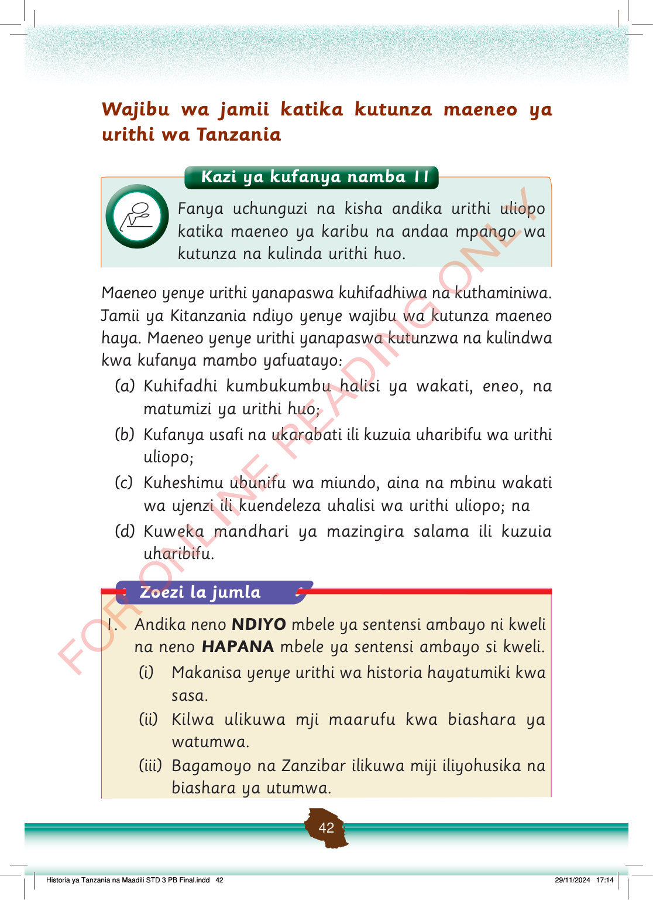

Kazi ya kufanya namba 11
Fanya uchunguzi na kisha andika urithi uliopo katika maeneo ya karibu na andaa mpango wa kutunza na kulinda urithi huo.
Wajibu wa jamii katika kutunza maeneo ya urithi wa Tanzania
Maeneo yenye urithi yanapaswa kuhifadhiwa na kuthaminiwa.
Jamii ya Kitanzania ndiyo yenye wajibu wa kutunza maeneo haya.
Maeneo yenye urithi yanapaswa kutunzwa na kulindwa kwa kufanya mambo yafuatayo:
a
Kuhifadhi kumbukumbu halisi ya wakati, eneo, na matumizi ya urithi huo;
b
Kufanya usafi na ukarabati ili kuzuia uharibifu wa urithi uliopo;
c
Kuheshimu ubunifu wa miundo, aina na mbinu wakati wa ujenzi ili kuendeleza uhalisi wa urithi uliopo; na
d
Kuweka mandhari ya mazingira salama ili kuzuia uharibifu.
Zoezi la jumla
Andika neno NDIYO mbele ya sentensi ambayo ni kweli na neno HAPANA mbele ya sentensi ambayo si kweli.
(i)
Makanisa yenye urithi wa historia hayatumiki kwa sasa.
(ii)
Kilwa ulikuwa mji maarufu kwa biashara ya watumwa.
(iii)
Bagamoyo na Zanzibar ilikuwa miji iliyohusika na biashara ya utumwa.
false
false
true